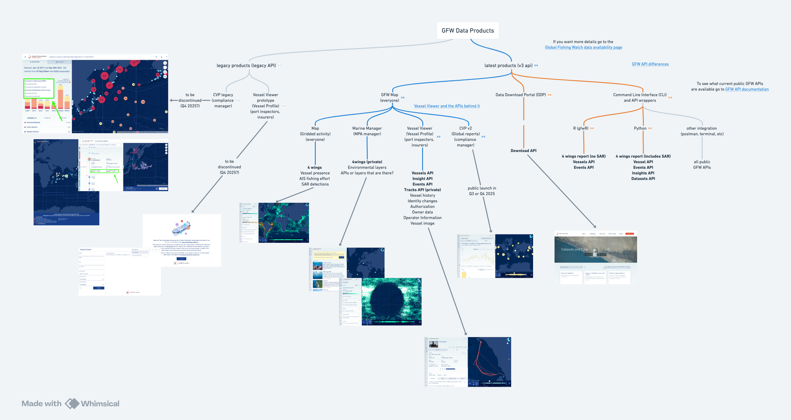

6 BigQuery to APIs to Products
The flow of data into GFW Products is enabled through a set of Application Programming Interfaces (APIs). This page documents the key APIs, the underlying queries powering them, and how they support user-facing products.
6.1 GFW APIs
 GFW Data Products Diagram link
6.1.1 Current GFW APIs (v3)
- GFW API Portal - different end points and which products call different end points
- Vessel Viewer API endpoints - Vessel Viewer specific API end points and examples
- A mapping of Global Fishing Watch Data Availability
- Documentation on differences between GFW data when accessing in the API, the API wrappers, and Data Download Portal
- Note on Product Event Tables Vs Map Notion page last updated by Hannah H in April 2025 covering differences between published versions of AIS-based event data.
6.1.2 Products Using Legacy APIs
Some older products are still using legacy APIs:
- Legacy CVP
- Vessel Profile Prototype
6.2 Accessing API Logic
To expose data from BigQuery (BQ) in our products, we organize it into API datasets. These are our way of grouping all data required for the Map and API services.
6.2.1 via API datasets site
API query logic is maintained in this API datasets hub. The API datasets hub returns the list of API Datasets that are used in our API.
- Username =
gfw_doc - Password =
datasets
6.2.1.1 How to Use the API Datasets Hub
Select the Environment
Use the dropdown in the top-right corner to select the environment.➤ Choose
Productionto view datasets currently used in our Public APIs and on the Map.Select a Dataset Group
Once the environment is set, pick the dataset group you want to explore — for example,AIS.Within each group, datasets are categorized (e.g.,
Events,Insights, etc.). All available versions are listed under each category.Find the Latest Versions
Datasets linked to Pipe v3 typically includev3.0in their version string.Example:
public-global-fishing-events:v3.01Review Dataset Logic
In the final column of each dataset entry,Queries & sourcesyou’ll find links to the API quieries.
These links let you review the logic applied during API publication.
6.2.2 via the Map
Staff can login to Map with GFW account and click in the info pop up. User will see a section “Queries used” where you can get the same links describe above to the API logic (see example of fishing effort below).

6.3 Accessing BigQuery Table logic
To view underlying BigQuery table logic:
- Open the relevant table in BigQuery.
- Click the “Details” tab to find:
- Source tables
- (When available) links to the GitHub code that generates each table
- Click the “Lineage” tab for a flux diagram of the source tables that feed into the BQ table
⚠️ If the logic in the API hub seems outdated or unclear, contact Gisela.
6.4 Caveats and Considerations
Permissions
Access to API data may be restricted depending on your user role. Some datasets may only be available to:
- Internal GFW staff
- JAC members
- Specific partners
As a result, data visible through the API can vary based on your credentials.
Data Filters
We’ve made our best effort to document all filters and permission scopes on each API. However, gaps may still exist.
If you’re uncertain about:
- Why data may be missing or inconsistent
- What filters are applied
Please contact Gisela for clarification.